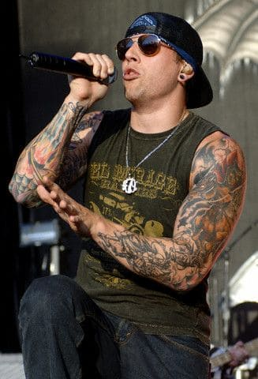

Matthew Charles Sanders, más conocido como M. Shadows, es el vocalista principal de la banda de heavy metal Avenged Sevenfold..
Matthew Charles Sanders, más conocido como M. Shadows, es el vocalista principal de la banda de heavy metal Avenged Sevenfold..
Brian Elwin Haner Jr., más conocido por su nombre artístico Synyster Gates, es un guitarrista estadounidense conocido por ser el guitarrista líder y corista de la banda Avenged Sevenfold.
Zachary James Baker, más conocido por su nombre artístico Zacky Vengeance, es el guitarrista rítmico y cofundador de la banda estadounidense de heavy metal Avenged Sevenfold.
Jonathan Lewis Seward, es más conocido por su nombre artístico Johnny Christ, bajista profesional y ocasional corista estadounidense.
Brooks Wackerman es un baterista estadounidense. Forma parte de la banda de heavy metal Avenged Sevenfold.